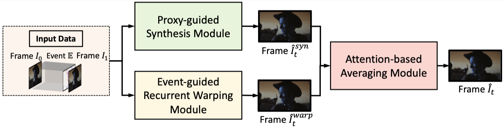

In this work, we revisit the inherent properties of event cameras to improve video frame interpolation results. We propose a VFI framework that is mainly composed of three components: a Proxy-guided Synthesis Module, an Event-guided Recurrent Warping Module, and an Attention-based Averaging Module.
In light of the quasi-continuous nature of the time signals provided by event cameras, we split the events into multiple slices and synthesize in stages, where each stage is demanded to regress from a simpler function with reduced non-linearity using data that is less affected by temporal error accumulations.
Given that event cameras only encode intensity changes and polarity rather than color intensities, estimating optical flow from events is arguably more difficult than from RGB information. We therefore propose to incorporate RGB information in an event-guided optical flow refinement strategy.
This work was supported by NSFC #61932020, #62172279, #62250610225, Program of Shanghai Academic Research Leader, projects 22dz1201900 and 22ZR1441300 funded by the Shanghai Science Foundation and “Shuguang Program” supported by Shanghai Education Development Foundation and Shanghai Municipal Education Commission. This website is in part based on a template of Michaël Gharbi.